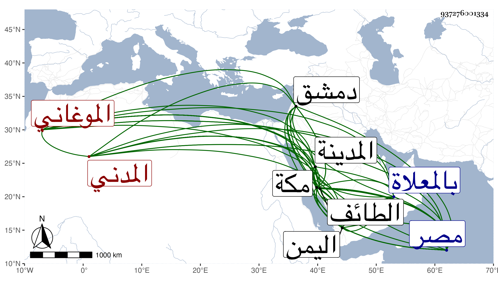

0902Sakhawi.DawLamic.ITO20230111-ara1.EIS1600.937276001334
Biography ID: 937276001334
877
محمد بن إبراهيم بن عبد الحميد بن علي تقي الدين الموغاني الأصل المدني نزيل مكة ويعرف بابن عبد الحميد . اشتغل بالأدب ونظم الشعر وكان فيه صمم فكان لذكائه يدرك ما يكتب له في الهواء وما يكتب في كفه بالإصبع ليلا . مات بمكة سنة عشر قاله شيخنا في إنبائه وقال : وقد حاكاه في ذلك صاحبنا عبد الرحمن ابن علي الحلبي الأصل سبط أبي أمامة بن النقاش يعني الماضي في محله وذكره التقي الفاسي في مكة فقال أنه سمع بمصر من جويرية الهكارية والجمال عبد الله الباجي وغيرهما بدمشق كما ذكر من ابن أميلة والصلاح بن أبي عمر ، وله اشتغال بالعلم ونباهة في الأدب وغيره وذكاء مفرط بحيث أنه لما أصابه الصمم كان يكتب له في الهواء ثم في يده ليلا فلا يفوته شيء من فهمه غالبا بحيث يتعجب الناس من ذلك وكانت له مكانة عند أمير المدينة ثابت بن نعير بن منصور بن جماز بن شيحة ثم نال مكة عند صاحب مكة حسن بن عجلان وأعيان جماعته وكان يكتب عنه إلى مصر وغيرها وأقام على ذلك سنين وله تردد كثير لمكة من قبل ولايته ثم قطنها حتى مات وكذا دخل اليمن فنال منه خيرا وترافقنا مرة إلى الطائف للزيارة وسمعت من لفظه بالسلامة حديث الأعمال من الغيلانيات عن ابن أميلة وابن أبي عمر إجازة إن لم يكن سماعا وعدة حكايات مات في المحرم ودفن بالمعلاة وقد بلغ السبعين أو قاربها وشهد الصلاة عليه ودفنه صاحب مكة المشار إليه وهو في عقود المقريزي .
